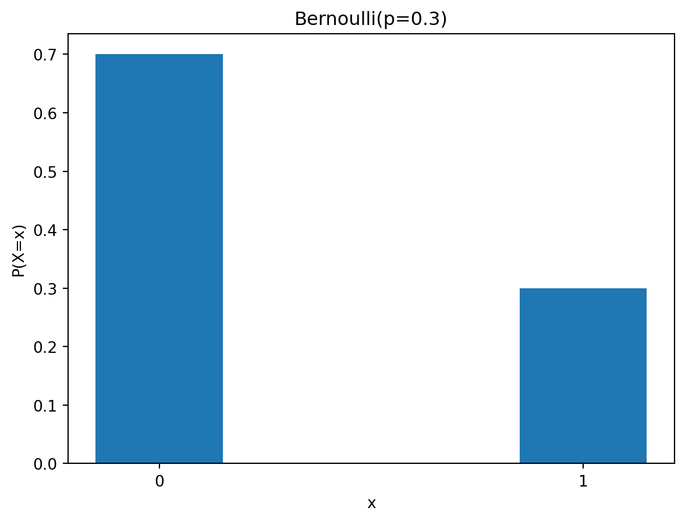
Probability Theory
Statistics
Key Concepts from Probability Theory
Discrete Distributions
Bernoulli Distribution
A single trial where the outcome is success (1) or failure (0).
Parameter - p: probability of success
\[ P(X = x) = \begin{cases} p & (x = 1) \\ 1-p & (x = 0) \end{cases} \]
\[ E[X] = p, \quad Var[X] = p(1-p) \]
Examples
- Coin toss (heads vs tails)
- Customer clicks an advertisement
- Product purchase (yes/no)
Binomial Distribution
Counts the number of successes in n independent Bernoulli trials.
Parameters - n: number of trials - p: probability of success in each trial
\[ P(X = k) = \binom{n}{k} p^k (1-p)^{n-k} \]
\[ E[X] = np, \quad Var[X] = np(1-p) \]
Python Code
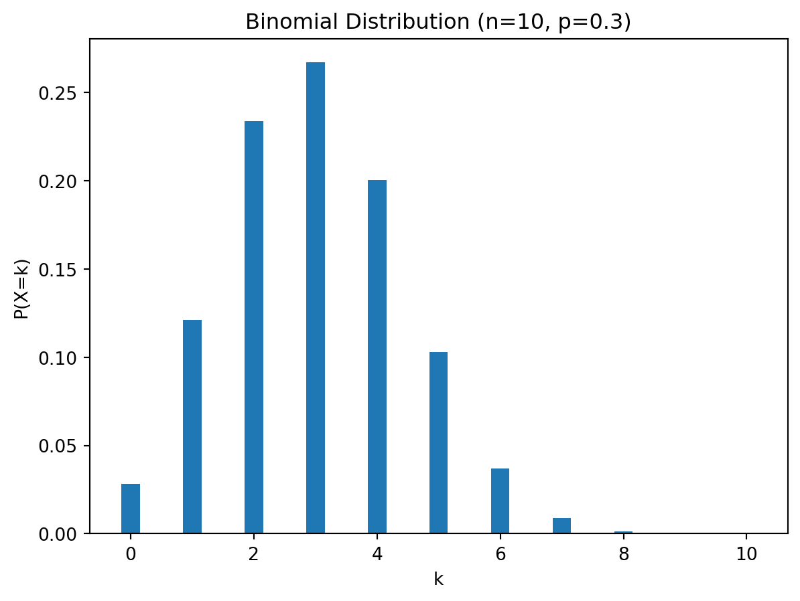
Examples
- Number of customers who purchase out of 10
- Number of defective products in a batch
- Basketball free-throw successes
Poisson Distribution
Counts the number of events in a fixed time or space interval.
Parameter - λ: average event rate per interval
\[ P(X = k) = \frac{\lambda^k e^{-\lambda}}{k!} \]
\[ E[X] = \lambda, \quad Var[X] = \lambda \]
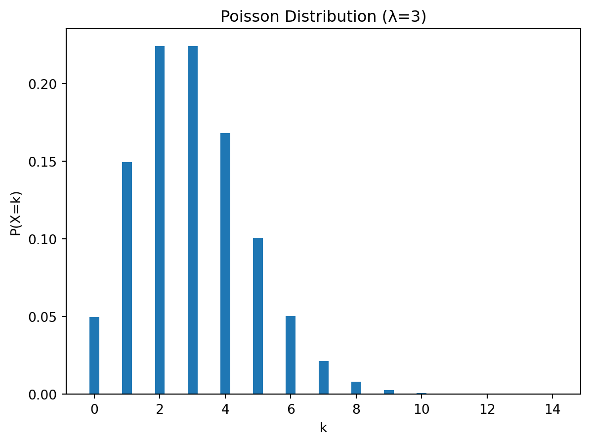
Examples
- Calls received by a call center in 1 hour
- Number of earthquakes per year
- Number of emails per minute
Geometric Distribution
Number of trials needed until the first success.
Parameter - p: probability of success per trial
\[ P(X = k) = (1-p)^{k-1} p \]
\[ E[X] = \frac{1}{p} \]
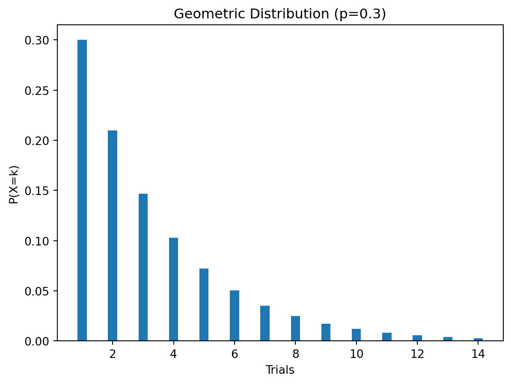
Examples
- Number of coin tosses until first heads
- Attempts until first customer purchases
- Inspections until first defective product
Negative Binomial Distribution
Number of trials needed until r successes occur.
Parameters - r: required number of successes - p: probability of success
\[ P(X = k) = \binom{k-1}{r-1} (1-p)^{k-r} p^r \]
\[ E[X] = \frac{r}{p} \]
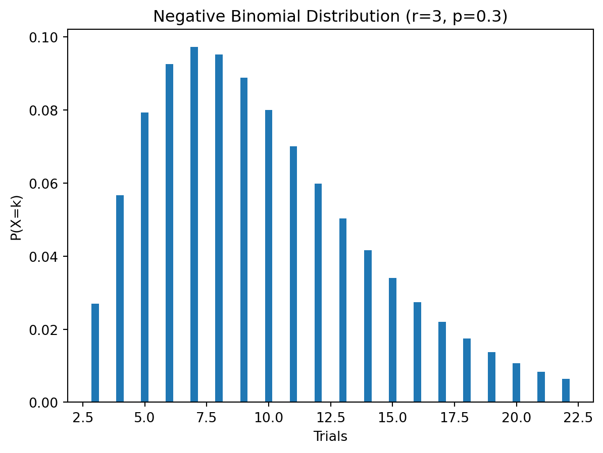
Examples
- Customers until 5 purchases occur
- Number of shots until scoring 3 goals
- Failures until a product breaks multiple times
Continuous Distributions
Normal Distribution
A common continuous distribution for natural variations.
Parameters - μ: mean - σ²: variance
\[ f(x)=\frac{1}{\sqrt{2\pi\sigma^{2}}} \exp\left( -\frac{(x-\mu)^2}{2\sigma^2} \right) \]
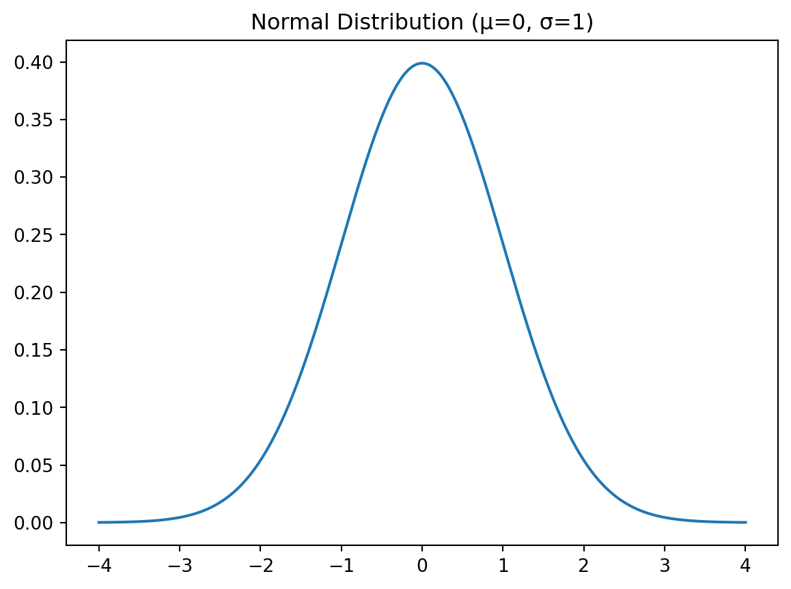
Examples
- Height, weight, IQ
- Exam scores
- Measurement errors
Exponential Distribution
Waiting time between Poisson events.
Parameter - λ: rate parameter (events per unit time)
\[ f(x) = \lambda e^{-\lambda x} \]
\[ E[X] = \frac{1}{\lambda} \]
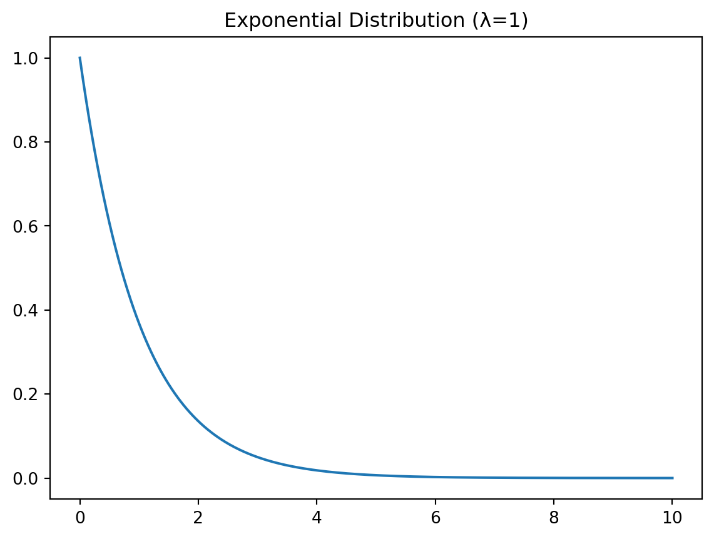
Examples
- Time until next customer arrives
- Time until next machine failure
- Time until radioactive decay
Gamma Distribution
Time until the k-th event occurs.
Parameters - k: shape parameter - λ: rate parameter
\[ f(x)=\frac{\lambda^{k} x^{k-1} e^{-\lambda x}}{\Gamma(k)} \]
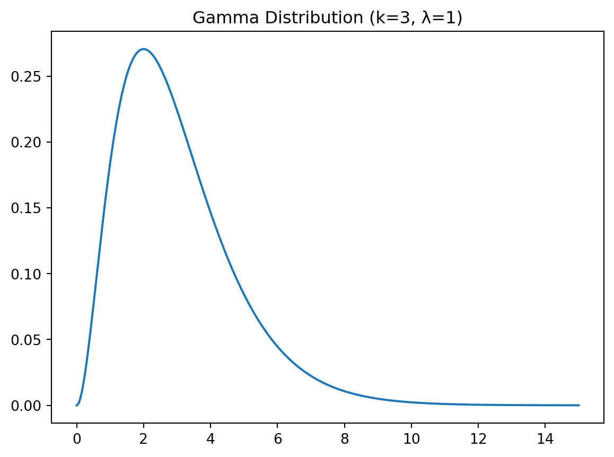
Examples
- Total wait time for multiple arrivals
- Insurance claim modeling
- Bayesian prior for rates
Chi-Square Distribution
Sum of squared standard normal random variables.
Parameter - k: degrees of freedom
\[ X = Z_1^2 + Z_2^2 + \cdots + Z_k^2 \]
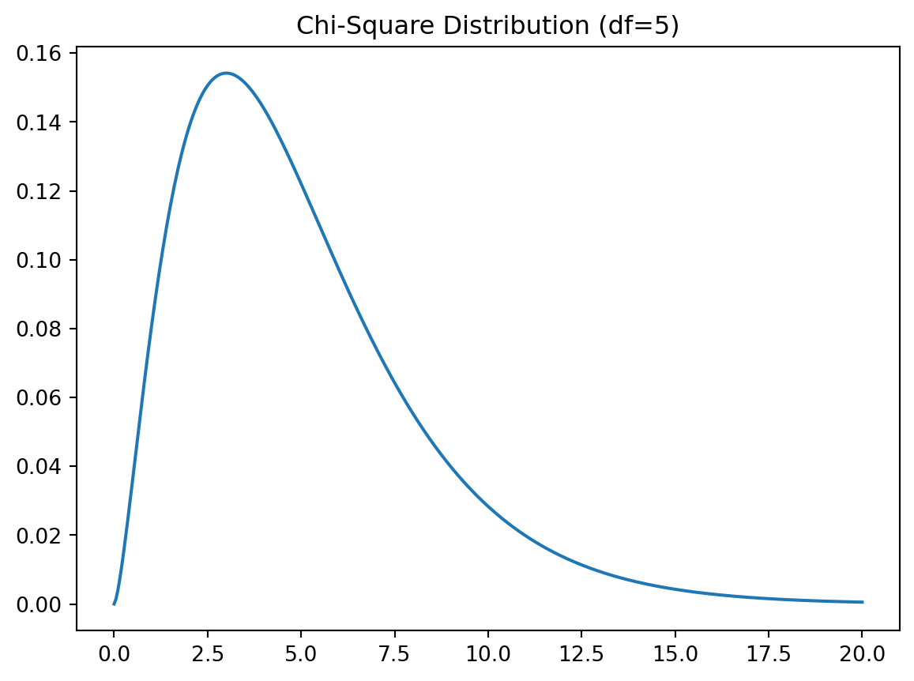
Examples
- Variance tests
- Goodness-of-fit test
- Independence test in contingency tables
Student’s t-distribution
Used when population variance is unknown (small samples).
Parameter - df: degrees of freedom
\[ T = \frac{\overline{X} - \mu}{S / \sqrt{n}} \]
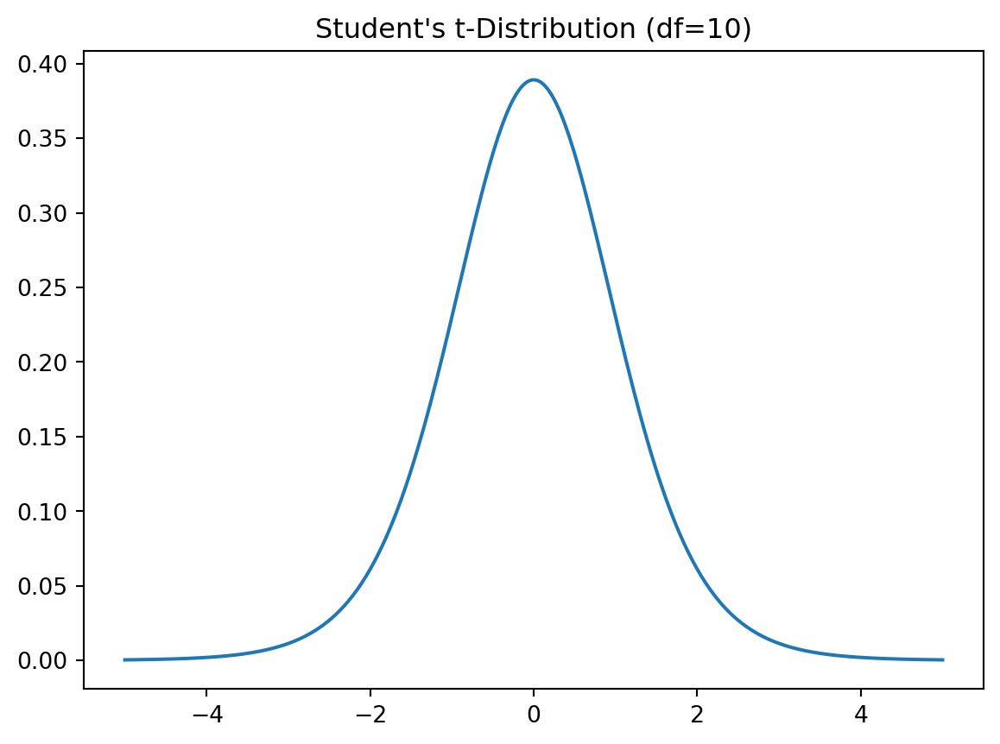
Examples
- One-sample t-test
- Two-sample t-test
- Confidence intervals
F-distribution
Ratio of two variances.
Parameters - df1: numerator df - df2: denominator df
\[ F = \frac{S_1^2 / df_1}{S_2^2 / df_2} \]
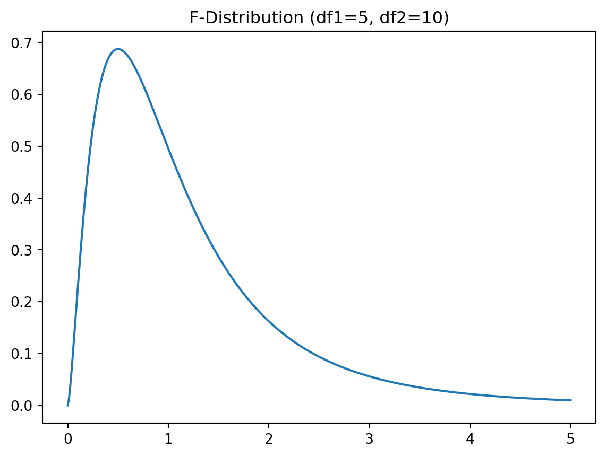
Examples
- ANOVA
- Comparing two variances
- Regression significance test
Beta Distribution
A flexible distribution for modeling probabilities.
Parameters - α: left-tail shape - β: right-tail shape
\[ f(p) = \frac{1}{B(\alpha,\beta)} p^{\alpha - 1} (1 - p)^{\beta - 1} \]
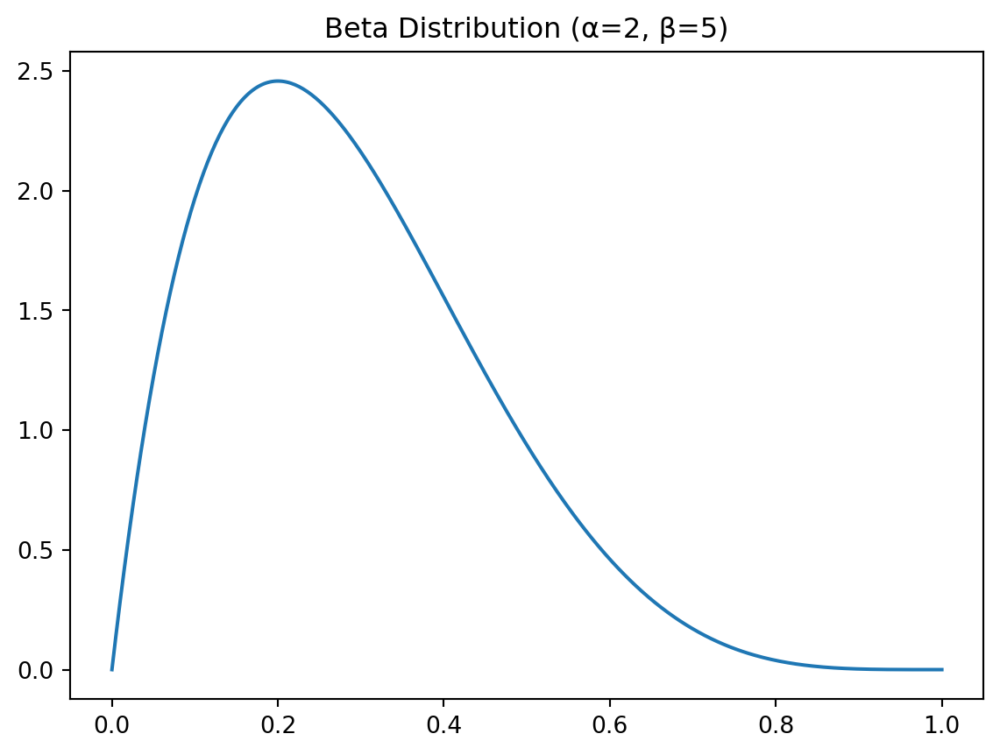
Examples
- Bayesian inference
- A/B testing
- Modeling click-through rates
Relationships Between Distributions
Bernoulli → Binomial → Poisson → Normal
↑ ↑
Beta GammaNormal → Chi-square → t → FSummary
| Distribution | Type | When to Use |
|---|---|---|
| Bernoulli | Discrete | Single success/failure outcome |
| Binomial | Discrete | Number of successes in n trials |
| Poisson | Discrete | Event count in time/space |
| Geometric | Discrete | Trials until first success |
| Normal | Continuous | Natural variations, measurement |
| Exponential | Continuous | Time between events |
| Gamma | Continuous | Time until k events |
| Chi-square | Continuous | Variance & independence tests |
| t | Continuous | Mean inference (small samples) |
| F | Continuous | Comparing variances, ANOVA |
| Beta | Continuous | Modeling probabilities |
Key Points
Normal → basis of CLT Poisson → rare events per unit time Beta → distribution of probability p Binomial → Poisson approximation (np = λ) Exponential → waiting time Chi-square / t / F → hypothesis testing Gamma → sum of exponential waiting times